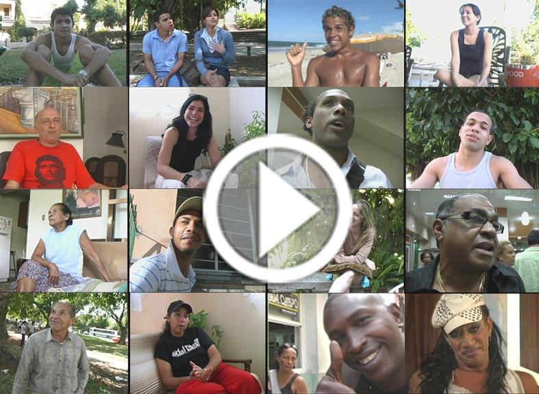
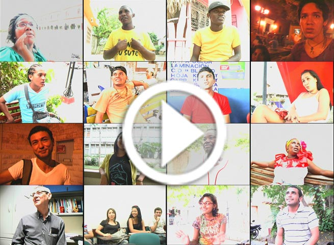

Navigation ein-/ausblenden
Cross Representation
Presentation of Cuba
Presentation of Colombia
Sociocultural causal models
Guideline for interpretation
Homophilia in Cuba
Homophobia in Cuba
Homophilia in Colombia
Homophobia in Colombia
Examples of
Double standards
Cultural stereotypes
Religious stereotypes
Homophobic traits in Language
Machismo in Language
Comment on existence of machismo in society
Comment on social discrimination
Palenque de San Basilio
Machismo and place of residence
Cultural Stereotypes and acceptance of homosexuals
Homophobia and homophilia in Cuba and the Colombian Caribbean coast
Supporting videos
English
|
Deutsch
|
Español
Audiovisual contents for Cuba

Audiovisual contents for Colombia
